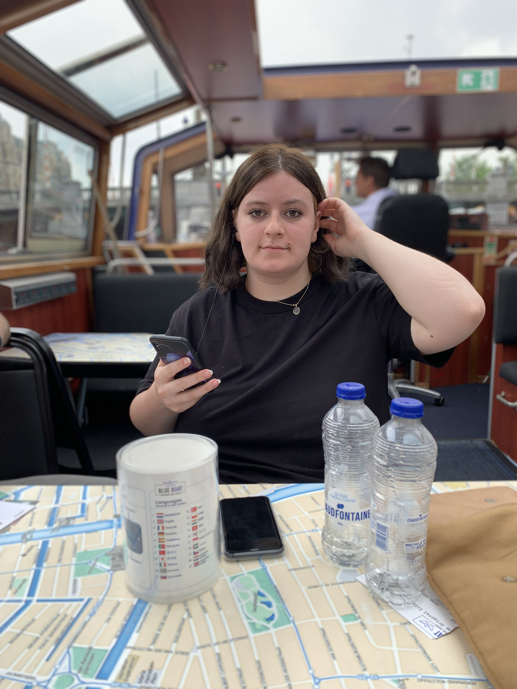
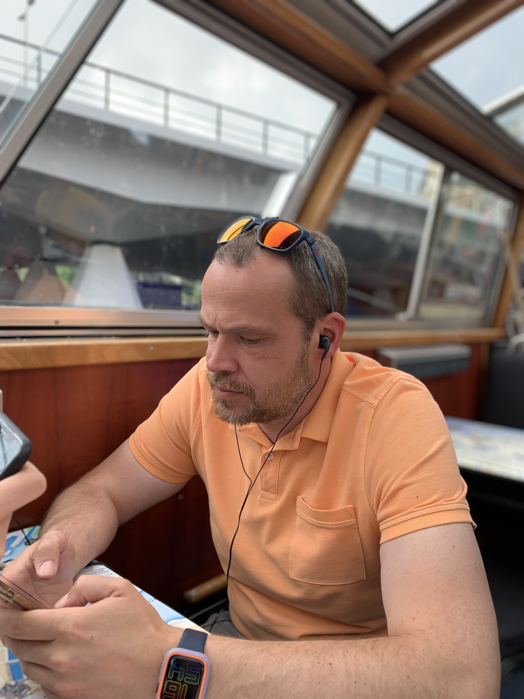
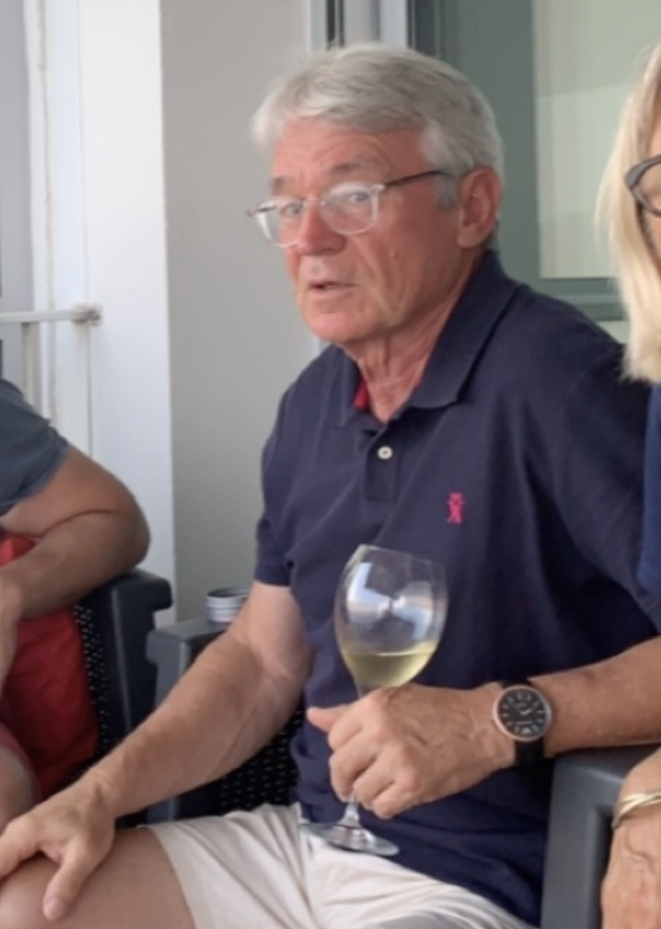
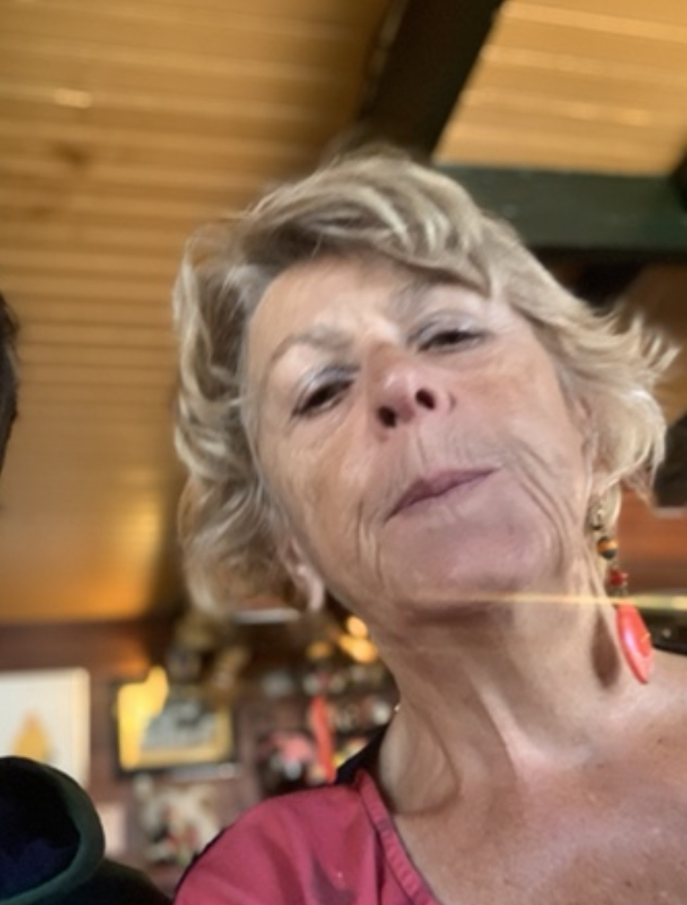

J'ai une soeur : Elle s'appelle Maya , elle a 21 ans et fait actuellement des études en langues et sociologie .

Mes parents sont :
Ma mère s'appelle Vanessa , elle a 39 ans ( presque 40 ) elle est actuellement dévelopeuse web en Belgique et est entrain de suivre une formation .
Mon père s'appelle Alexandre , il a 44 ans ( il a déjà passé les 40 ) Il est actuellement gérant de restaurants à Saint-Quentin , Reims et Soissons .

Mes grands parents sont :
Du côté paternel :
Mon grand-père s'appelle Philippe , il a 71 ans , il est actuellement retraité mais il était Ophtalomogue lorsqu'il était encore en activité dans la ville de Laval .

Ma grand-mère s'appelle Marie-Agnès , elle a 70 ans , elle est actuellement retraitée mais elle était Gynécologue lorsqu'elle était encore en activité à Paris .

Du côté maternel :
Mon grand-père s'appelle Paul , il a 65 ans , il est encore en activité en tant que Correspondant dans la ville de Nouméa .
Ma grand-mère s'appelle Pascale , elle a 61 ans , elle est encore en activité en tant que Gestionnaire de courrier .